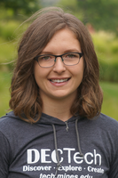

DISCOVER TECH
For 3rd - 6th Grade Girls
This program meets four times per semester on School of Mines campus. It introduces girls to a variety of STEM subjects through fun, hands-on activities. Registration for our Fall 2017 program is now open.

- Time: 4:30-5:45
- Day: Offered Monday - Thursday (choose ONE day of the week, as listed below)
- Location: Colorado School of Mines campus
- Cost: $60 (includes program t-shirt)
2017 Fall Session days/dates
- 3rd/4th Grade (choose ONE session):
- MONDAY session: September 11, September 25, October 9, November 6
- TUESDAY session: September 12, September 26, October 10, November 7
- WEDNESDAY session: September 13, September 27, October 11, November 8
- THURSDAY session: September 14, September 28, October 12, November 9
- 5th/6th Grade (choose ONE session):
- MONDAY session: September 18, October 2, October 23, November 13
- TUESDAY session: September 19, October 3, October 24, November 14
- WEDNESDAY session: September 20, October 4, October 25, November 15
- THURSDAY session: September 21, October 5, October 26, November 16
Our DISCOVER Tech Instructors
Becca is a senior studying Computer Science at Mines and this is her third year working with DECTech. Prior to her Sophomore year, Becca did not have any experience with programming but has quickly fallen in love with Computer Science and hopes to help the girls in this program find that love at an earlier age. Outside of class, Becca spends as much time camping, hiking, biking, and skiing as possible and is really looking forward to another semester with DECTech!
 Bethel is a junior majoring in Computer Science and minoring in Humanitarian Engineering. She loves her job because it makes her happy to see all of the DECtech girls gaining interest in STEM! Outside of work she likes to travel and spend time with friends and family.
Bethel is a junior majoring in Computer Science and minoring in Humanitarian Engineering. She loves her job because it makes her happy to see all of the DECtech girls gaining interest in STEM! Outside of work she likes to travel and spend time with friends and family.
 Lydia is a sophomore in Civil Engineering at Mines. Since elementary school she has had a love for math and science and knew she wanted to go to Mines after a field trip in the 5th grade. In her free time she enjoys cooking, painting, and doing yoga.
Lydia is a sophomore in Civil Engineering at Mines. Since elementary school she has had a love for math and science and knew she wanted to go to Mines after a field trip in the 5th grade. In her free time she enjoys cooking, painting, and doing yoga.
Sarah is a 5th year senior pursuing a degree in Engineering Physics with a minor in Computer Science. She hopes to take her education into the aerospace field hoping one day to work in astronautics and space exploration. On campus, she is involved in the orchestra and band programs. She sees the beauty in expression through music and arts and is fascinated by the connection of technological growth in music. She is very passionate about the versatility of STEM in all walks of life and loves that she is a part of a program that allows her to share love for STEM.
Shelly is a graduate student here at Mines but is originally from St. Louis, MO. After getting degrees in math and teaching, she spent some math time in high school classrooms and then decided to move to Colorado and go back to school to pursue her passion for Computer Science. Every semester she looks forward to getting to spending time helping young students get excited about STEM. In her free time she loves to climb and snowboard. Although she was born in the Midwest, she feels like she was always meant to be in Colorado!
Megan is a senior studying Mechanical Engineering and Robotics. This is her 3rd year working with Discover Tech and her 2nd as an instructor. She loves working with all the girls here at DECTech and she hopes to see them all in the STEM field someday!
For a printable flyer (pdf) about the current session of DISCOVER TECH, please click here.
Have questions? Please visit our FAQ page and find answers to popular questions.
To register for this program, click the REGISTER link in the purple navigation bar above.
Need more information? Please email us at stem-tech@mines.edu
Financial scholarships available thanks to our sponsors